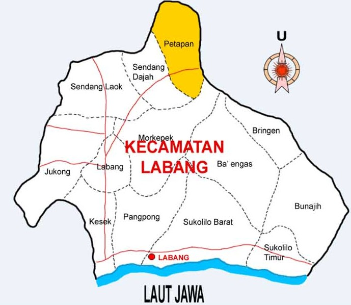

Peta Wilayah Kecamatan Labang

Desa dalam Wilayah Kecamatan Labang
- 1. KESEK
- 2. LABANG
- 3. JUKONG
- 4. PANGPONG
- 5. SUKOLILO TIMUR
- 6. SUKOLILO BARAT
- 7. BRINGEN
- 8. BA'ENGAS
- 9. BUNAJIH
- 10. SENDANG LAOK
- 11. SENDANG DAJAH
- 12. PETAPAN
- 13. MORKEPEK
Rekapitulasi Kependudukan Kecamatan Labang
| No |
Nama Desa |
Jumlah Penduduk (L) |
Jumlah Penduduk (P) |
Total Penduduk |
Jumlah Wajib E-KTP (L) |
Jumlah Wajib E-KTP (P) |
Total Wajib E-KTP |
Jumlah Memiliki E-KTP (L) |
Jumlah Memiliki E-KTP (P) |
Total Memiliki E-KTP |
| 1 |
Kesek |
1,600 |
1,725 |
3,325 |
1,178 |
1,329 |
2,507 |
1,330 |
1,333 |
2,507 |
| 2 |
Labang |
1,213 |
1,284 |
2,497 |
815 |
982 |
1,797 |
817 |
980 |
1,797 |
| 3 |
Jukong |
1,551 |
1,677 |
3,228 |
1,063 |
1,277 |
2,340 |
1,061 |
1,276 |
2,337 |
| 4 |
Pangpong |
1,478 |
1,556 |
3,034 |
1,107 |
1,189 |
2,296 |
1,109 |
1,187 |
2,296 |
| 5 |
Sukolilo Timur |
1,447 |
1,512 |
2,959 |
1,097 |
1,128 |
2,225 |
1,099 |
1,126 |
2,225 |
| 6 |
Sukolilo Barat |
3,514 |
3,606 |
7,120 |
2,249 |
2,540 |
4,789 |
2,251 |
2,538 |
4,789 |
| 7 |
Bringin |
1,197 |
1,335 |
2,532 |
879 |
1,126 |
2,005 |
880 |
1,125 |
2,005 |
| 8 |
Ba'engas |
1,192 |
1,334 |
2,526 |
765 |
985 |
1,750 |
764 |
985 |
1,749 |
| 9 |
Bunajah |
1,045 |
1,063 |
2,108 |
745 |
874 |
1,619 |
747 |
872 |
1,619 |
| 10 |
Sendang Laok |
756 |
784 |
1,540 |
526 |
678 |
1,204 |
527 |
678 |
1,205 |
| 11 |
Sendang Dajah |
1,288 |
1,323 |
2,611 |
910 |
1,084 |
1,994 |
911 |
1,083 |
1,994 |
| 12 |
Petapan |
1,073 |
1,086 |
2,159 |
744 |
869 |
1,613 |
745 |
868 |
1,613 |
| 13 |
Morkepek |
879 |
913 |
1,792 |
653 |
676 |
1,329 |
654 |
675 |
1,329 |
| Total |
19,009 |
19,093 |
38,192 |
13,385 |
14,421 |
27,806 |
13,365 |
14,407 |
27,772 |